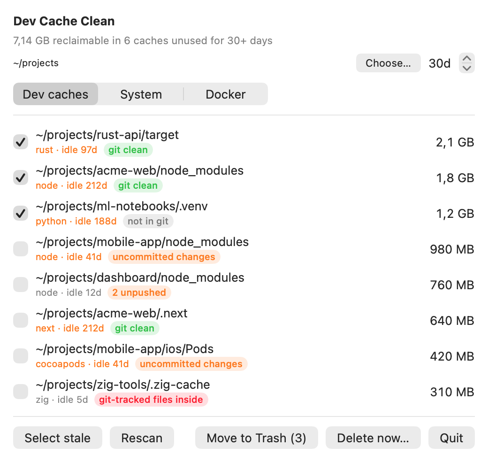
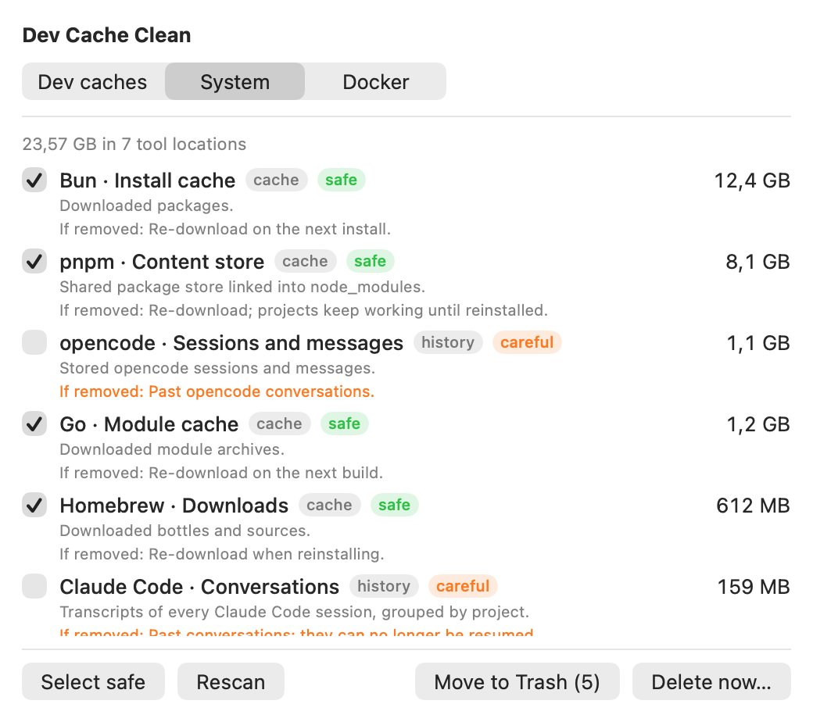
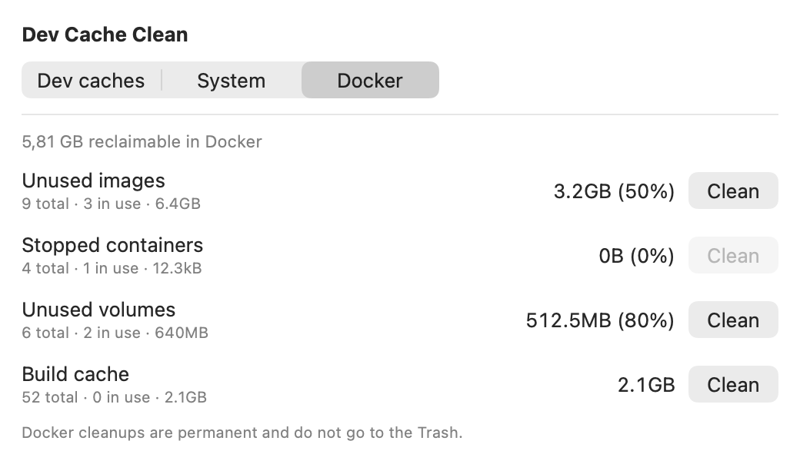

Find the developer caches silently eating your Mac's disk, and clean them safely
Dev Cache Clean is a free, open source macOS app with a fast Zig core that shows exactly what each cache is, what you lose if you remove it, and moves it to the Trash.
Build from source View on GitHub
Early: macOS 15+ app (Apple silicon), not notarized. Experimental command line for Linux and Windows. MIT licensed.

What it finds
Project caches
Found by walking a folder you choose (default ~/development). Each shows how many days its project has been idle.
node_modules,.next(next topackage.json)target(next toCargo.toml).zig-cache(next tobuild.zig)Pods(next toPodfile).venv,__pycache__
Global tool data
40 known locations, each labelled with what it is, what you lose and a risk level.
- AI coding agents: Claude Code, Codex CLI, opencode
- Editors: VS Code, Cursor
- npm, Yarn, pnpm, Bun, Cargo, Gradle, Maven, Homebrew, pip, uv, Go, CocoaPods, Playwright, Puppeteer
- Xcode: DerivedData, iOS DeviceSupport, simulator caches, archives
Docker
Images, stopped containers, volumes and build cache, with the reclaimable size from docker system df. Works with Docker Desktop and OrbStack.
The app has three tabs: Dev caches, System and Docker. Every global entry is documented in the full catalog. Credentials, settings and source code are never listed.
Screenshots


Safety
| Action | Where | Reversible? |
|---|---|---|
| Move to Trash | Dev caches and System tabs | Yes. Restore from the Trash. Space is freed when you empty it. |
| Delete now… | Dev caches and System tabs | No. Permanent, nothing goes to the Trash. Always asks for confirmation. |
| Docker clean | Docker tab | No. Permanent, always asks first and explains what is lost. |
- Only items returned by a scan can be acted on; symbolic links are refused.
- Credentials, tool settings and source code are never part of the catalog.
- Items marked careful (conversation history and anything you may want back) are never pre-selected.
- The app makes no network requests.
Speed
Measured on the author's ~/development (about 550 caches, 34 GB, Apple silicon):
| Version | Time |
|---|---|
One stat per file, one thread | 4 min 23 s |
| Parallel sizing | 1 min 30 s |
Parallel discovery and sizing with getattrlistbulk | about 20 s |
Results were compared with find (same set of caches) and du (sizes within rounding). Sizes are allocated bytes on disk; hard-linked stores such as pnpm's may free less than they show. Your numbers will differ.
Install, or build it yourself
With Homebrew (Apple silicon, macOS 15+), use the full name: Homebrew 7 only loads casks from taps you trust, and naming the cask is how you trust it.
brew install --cask developerfred/tap/dev-cache-cleanThe app is not notarized, so macOS blocks the first launch: allow it in System Settings, Privacy & Security, Open Anyway. To build from source you need macOS 15+, the Xcode command line tools and Zig 0.17:
git clone https://github.com/developerfred/dev-limpeza.git
cd dev-limpeza
./make-app.sh && open app/DevCacheClean.app # window, Dock icon and menu bar item
./build.sh # CLI only
zig-out/bin/dev-cache-clean scan ~/development --days 30
zig-out/bin/dev-cache-clean global
zig-out/bin/dev-cache-clean dockerSet ZIG=/path/to/zig to use a specific Zig binary.
FAQ
Is Dev Cache Clean safe?
Dev caches are moved to the Trash so you can restore them. Only items returned by a scan can be acted on, symbolic links are refused, and credentials, tool settings and source code are never listed. The Delete now button and Docker cleanups are permanent and always ask for confirmation first.
Does it phone home?
No. The app makes no network requests and has no telemetry.
What does "careful" mean?
Careful marks data you may want back, such as conversation history, Xcode archives or Maven's local repository. Careful items are never pre-selected and the confirmation warns you when your selection includes them. Safe items are regenerated on demand and cost only time or bandwidth.
Why did I free less space than the app showed?
Sizes are allocated bytes on disk. Stores such as pnpm's and Bun's are hard-linked or cloned into projects, so removing them can free less than shown. Space from the Trash is only freed when you empty it.
What do I need to run it?
An Apple silicon Mac with macOS 15 or later. Install with Homebrew (brew install --cask developerfred/tap/dev-cache-clean) or download the DMG from the releases page. It is not notarized, so macOS blocks the first launch: allow it in System Settings, Privacy and Security, Open Anyway. To build from source you also need the Xcode command line tools and Zig 0.17.